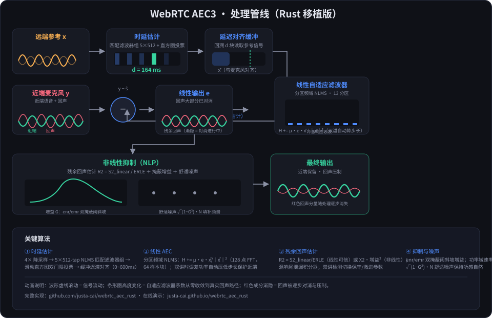

00:00 / 00:10
听感指南
- 近端麦克风：能同时听到近端说话人与远端语音的回声（约 168ms 延迟）
- 线性输出：自适应滤波器卷积对消后的残差——回声被部分消除， 但双讲期间滤波器为保护近端而放缓更新，残留明显
- 非线性输出：在线性输出基础上，抑制器按"回声/近端比 + 掩蔽阈"逐频点压制残余， 并注入舒适噪声填补频谱空隙；含双讲近端掩蔽优化
- 使用每轨的 静音/独奏 对比聆听，感受各阶段差异
同一段双讲素材，经过 AEC 管线各阶段的音频对照
